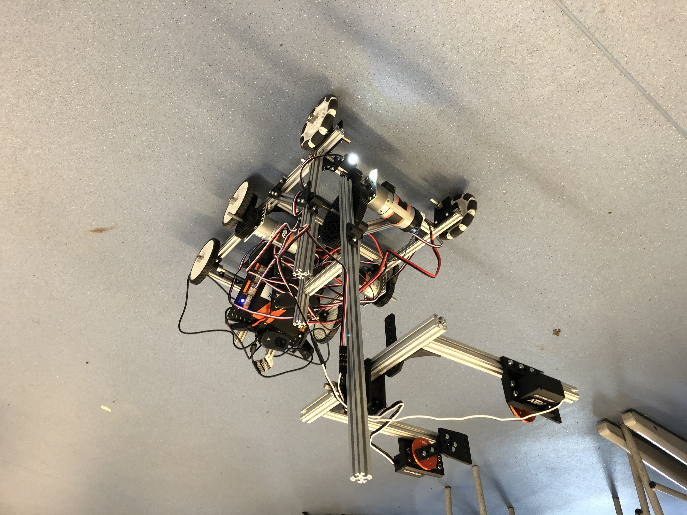

Ground X
The 2019-2020 Season
We started the season in september 2019. It took a while to get the team going as we had to learn from scratch. By November however we had a chasis which was built but wasn't moving In december however we had our first success with getting the robot moving and we went on a trip around our school.
Next up we wanted to get the claw working. This was very tricky and we went through multiple different design iterations before settling on a final one. We managed to get this working well by mid january and it was looking good :)
We also had to get automation to work. This was one of the most challenging but also most rewarding part of the robot as it is something we had never done before but it was amazing to see it working. Automation wasn't all of it though. We also had to actually drive the thing! Here you can see one of first attempts at maneuvering to pick up one of the blocks:
Next up was the competition!!!!
It was a great day which we all enjoyed especially as it was the first proper testing of the robot with a full arena!
In the end we one the Inspire award which was amazing given that we had no idea what how our robot would compare to everyone else's
That meant we got through to the next round which would take place in London!
Unfortunately that was as far as our 2019-2020 season went as the season was cut short by Covid-19.
However we're now back up and running in the 2020-2021 Season!
Learn more about the 2020-2021 season here!